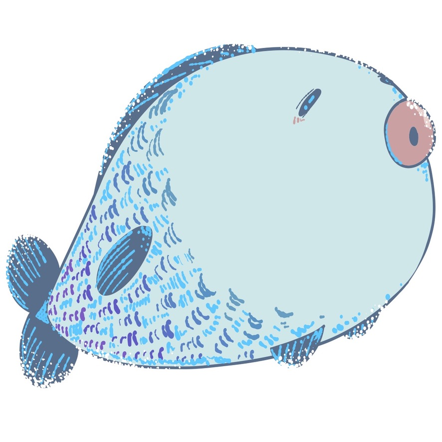

About Me
 |
哈囉！我是 黃湘涵 ◡̎-正在學習、考試、檢定、工作、備考中掙扎的大學生- 國立台北教育大學 |
我是一位大學生，正在對遊戲設計、網頁設計、軟體設計及2D與3D美術設計進行學習。希望製作出能被大眾所需要及期待的作品。
此外，我熱愛各種遊戲、小說及動畫作品。不只是興趣使然，在享受過程中還能取得到對於設計的靈感。
 |
哈囉！我是 黃湘涵 ◡̎-正在學習、考試、檢定、工作、備考中掙扎的大學生- 國立台北教育大學 |
我是一位大學生，正在對遊戲設計、網頁設計、軟體設計及2D與3D美術設計進行學習。希望製作出能被大眾所需要及期待的作品。
此外，我熱愛各種遊戲、小說及動畫作品。不只是興趣使然，在享受過程中還能取得到對於設計的靈感。
建議攜帶筆記本與筆，方便隨時記錄課堂中的關鍵知識點與靈感。